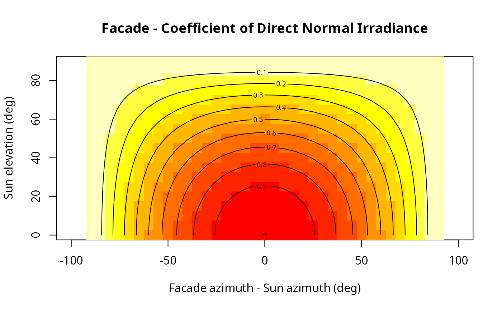
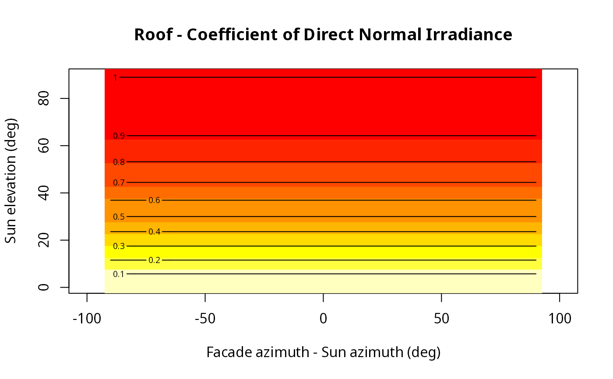

This function calculates the coefficient of reduction in Direct Normal Irradiance load due to angle of incidence. For example, a coefficient of 1 is obtained when the sun is perpendicular to the surface.
coefDirect(type, facade_az, solar_pos)character, specifying surface type. All values must be either "roof" or "facade"
Facade azimuth, in decimal degrees from North. Only relevant for type="facade"
A matrix with two columns representing sun position(s); first column is the solar azimuth (in decimal degrees from North), second column is sun elevation (in decimal degrees); rows represent different positions (e.g. at different times of day)
Numeric vector of coefficients, to be multiplied by the direct beam radiation values. The vector length is the same as the length of the longest input (see Note below)
All four arguments are recycled to match each other's length. For example, you may specify a single type value of "roof" or "facade" and a single facade_az value, but multiple sun_az and sun_elev values, for calculating the coefficients for a single location given different positions of the sun, etc.
# Basic usage
coefDirect(type = "facade", facade_az = 180, solar_pos = matrix(c(210, 30), ncol = 2))
#> [,1]
#> [1,] 0.75
# Demonstration - Direct beam radiation coefficient on 'facades'
sun_az = seq(270, 90, by = -5)
sun_elev = seq(0, 90, by = 5)
solar_pos = expand.grid(sun_az = sun_az, sun_elev = sun_elev)
solar_pos$coef = coefDirect(type = "facade", facade_az = 180, solar_pos = as.matrix(solar_pos))[1, ]
coef = reshape2::acast(solar_pos, sun_az ~ sun_elev, value.var = "coef")
image(
180 - sun_az, sun_elev, coef,
col = rev(heat.colors(10)),
breaks = seq(0, 1, 0.1),
asp = 1,
xlab = "Facade azimuth - Sun azimuth (deg)",
ylab = "Sun elevation (deg)",
main = "Facade - Coefficient of Direct Normal Irradiance"
)
contour(180 - sun_az, sun_elev, coef, add = TRUE)

# Demonstration - Direct beam radiation coefficient on 'roofs'
solar_pos$coef = coefDirect(type = "roof", facade_az = 180, solar_pos = as.matrix(solar_pos))[1, ]
coef = reshape2::acast(solar_pos, sun_az ~ sun_elev, value.var = "coef")
image(
180 - sun_az, sun_elev, coef,
col = rev(heat.colors(10)),
breaks = seq(0, 1, 0.1),
asp = 1,
xlab = "Facade azimuth - Sun azimuth (deg)",
ylab = "Sun elevation (deg)",
main = "Roof - Coefficient of Direct Normal Irradiance"
)
contour(180 - sun_az, sun_elev, coef, add = TRUE)
